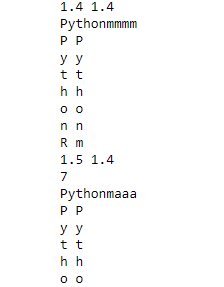

פתרתי את התרגיל רק לשם התירגול, ולא העליתי אותו למערכת. הקוד שלי עובד, והסיסמה מפוצחת, עד שלב מסוים, שמשתנה, ונע בין התו השביעי לאחרון בדרך כלל. הקוד ממשיך לרוץ, אבל משלב מסוים התווים כבר לא מפוצחים. עשיתי הדפסות ביקורת בכל שלב ושלב כדי להבין מדוע זה קורה, ולא הצלחתי להבין. לפעמים הפיצוח ‘קופץ’ ומפצח תו בטעות, ולפעמים פתאום מפסיק להחליף תווים, וכל פעם ההתנגות משתנה, ואין משהו ממש קבוע, מעבר לכך שזה לא קורה לפני התו השישי. גם ניסיתי לשנות את פונקציית המודול המשמש למדידת זמן, והבעיה ממשיכה. ניתן להעלות לפה את הקוד, אולי מישהו יעלה על משהו? לא נתקלתי מתחילת הקורס בתופעה כזאת מוזרה בהרצת הקוד
פרסם פה את הקוד 
תנסה שוב שלוש פעמים את התו ` רק בתחילת הקוד
‘’’
import base64
import string
import time
PASSWORD = b’UHl0aG9uUnVseg==’
def check_password(user_attempt):
real_password = base64.b64decode(PASSWORD).decode(‘utf-8’)
#real_password = ‘Pythorullz’ # אתה יכול לקצר את הסיסמה, אחרי שתבין את העקרון
if len(user_attempt) != len(real_password):
return False
for x, y in zip(real_password, user_attempt):
print(x,y) # הדפסת ביקורת של הזיפ שלהם, משמאל איבר הסיסמה, מימין האיבר שלי
time.sleep(0.2)
if x != y:
return False
return True
def count_time(password, elpassed):
#start = time.time() גם עם טיים.טיים זה מתנהגל אותו הדבר
start = time.perf_counter()
if check_password(password):
return True # טיפול אך ורק במצב שכל הסיסמה פוצחה, כדי לא לחזור על הללואה
#end = time.time() גם עם טיים. טיים זה מתנהל אותו הדבר
end = time.perf_counter()
stoper = round(end - start, 1)
#stoper = end - start
#print(stoper)
if stoper > elpassed:
return True
return False
def password_len():
password = ‘a’
while True:
if count_time(password, 0):
return password
password += ‘a’
def crack_password():
elpassed = 0.2 # משתנה של זמן
chars = string.ascii_letters + string.digits # המשתנה שמכיל את התווים האפשריים
password = password_len() # קריאה לפונקציה שמפצחת את אורך הסיסמה. מתקבל סטרינג של 10 תווי איי, שממנו מתחילים
password_index, password_lengh = 0, len(password)
chars_lengh = len(chars)
for password_index in range(password_lengh):
print(password_index) # הדפסת ביקרת של מיקום הפיצוח הנוכחי בתחילת כל שלב
chars_index = 0
while chars_index < chars_lengh:
password = password[:password_index] + password[password_index:].replace(password[password_index], chars[chars_index]) # בכל מעבר בלולאה, סטרינג הסיסמה מפורק ומורכב מחדש. המיקום בו היינו משמר, וכל השאר מתחלף בתו האפשרי הבא
print(password) # הדפסת ביקורת של מצב הסיסמה המפוצחת בכל צעד של השוואה
if count_time(password, elpassed):
elpassed += 0.2
chars_index = chars_lengh # במידה והזמן בפונקציה המקורית השתנה, זה אומר שפוצחה אות. יוצאים מהלולאה וממשיכים לתו הבא
chars_index += 1
return password
print(crack_password())
‘’’
התו נמצא פה:
לא גרש רגיל
import base64
import string
import time
PASSWORD = b'UHl0aG9uUnVseg=='
def check_password(user_attempt):
real_password = base64.b64decode(PASSWORD).decode('utf-8')
#real_password = 'Pythorullz' # אתה יכול לקצר את הסיסמה, אחרי שתבין את העקרון
if len(user_attempt) != len(real_password):
return False
for x, y in zip(real_password, user_attempt):
print(x,y) # הדפסת ביקורת של הזיפ שלהם, משמאל איבר הסיסמה, מימין האיבר שלי
time.sleep(0.2)
if x != y:
return False
return True
def count_time(password, elpassed):
#start = time.time() גם עם טיים.טיים זה מתנהגל אותו הדבר
start = time.perf_counter()
if check_password(password):
return True # טיפול אך ורק במצב שכל הסיסמה פוצחה, כדי לא לחזור על הללואה
#end = time.time() גם עם טיים. טיים זה מתנהל אותו הדבר
end = time.perf_counter()
stoper = round(end - start, 1)
#stoper = end - start
#print(stoper)
if stoper > elpassed:
return True
return False
def password_len():
password = 'a'
while True:
if count_time(password, 0):
return password
password += 'a'
def crack_password():
elpassed = 0.2 # משתנה של זמן
chars = string.ascii_letters + string.digits # המשתנה שמכיל את התווים האפשריים
password = password_len() # קריאה לפונקציה שמפצחת את אורך הסיסמה. מתקבל סטרינג של 10 תווי איי, שממנו מתחילים
password_index, password_lengh = 0, len(password)
chars_lengh = len(chars)
for password_index in range(password_lengh):
print(password_index) # הדפסת ביקרת של מיקום הפיצוח הנוכחי בתחילת כל שלב
chars_index = 0
while chars_index < chars_lengh:
password = password[:password_index] + password[password_index:].replace(password[password_index], chars[chars_index]) # בכל מעבר בלולאה, סטרינג הסיסמה מפורק ומורכב מחדש. המיקום בו היינו משמר, וכל השאר מתחלף בתו האפשרי הבא
print(password) # הדפסת ביקורת של מצב הסיסמה המפוצחת בכל צעד של השוואה
if count_time(password, elpassed):
elpassed += 0.2
chars_index = chars_lengh # במידה והזמן בפונקציה המקורית השתנה, זה אומר שפוצחה אות. יוצאים מהלולאה וממשיכים לתו הבא
chars_index += 1
return password
print(crack_password())מעולה, תודה רבה רבה, רבה, עברו עשרים תווים?
def count_time(password, elpassed):
start = time.time()
if check_password(password):
return True # טיפול אך ורק במצב שכל הסיסמה פוצחה, כדי לא לחזור על הללואה
end = time.time()
stoper = end - start
if stoper > elpassed + 0.2:
return True
return False
זה כל מה ששיניתי לך -
תנסה שנייה לחשוב על אורך הזמן שיקח לכל פעם שאתה צודק בכל אינדקס.
לדוגמא אם לא צדקת בראשון: תוך 0.2 יחזיר שגיאה
אם צדקת: יחזיר תוך 0.4 שגיאה על הבא, או יותר.
קצת מסובך להסבר אבל אם תחשב את הזמנים ידנית זה יסביר יותר טוב
בנוסף בתו האחרון הלוגיקה היא קצת שונה כי אתה לא יכול “להאזין” לזמן יותר תצטרך למצוא שיטה אחרת
טיפלתי בתו האחרון ספציפית בפונקציה הבודקת זמן. זה גם מצוין בהערה, ונבדק עם סיסמה קצרה יותר, ועובד. זאת לא הבעיה
עם התיקון שלך זה עובד, הרצתי פעמיים. אני לא יכול לומר שאני מבין מדוע… זה לא שלא חישבתי את זה מלא פעמים בראש. רק אם ספירת הזמן גדולה יותר מהספירה הקודמת (מה שמראה על פיצוח אות, אז לא חוזרת שגיאה. אם החישוב לא היה טוב, אז זה גם לא היה עובד עד השלב הזה. גם הסרת את עיגול המספר. חשבתי על זה לפני, וניסיתי לשחק עם זה, אבל ההשפעה של זה גם לא נראית הגיונית, כי הפער הוא של עשיריות השניה, והעיגול הוא של מאיות השניה. אז לצערי לא הבנתי באמת למה זה לא עבד…
אבל תודה רבה
עזוב את התיקון שלי, עדיף שתבין את מה שהתבקשנו מאשר איך תיקנתי - כדי שלהבא תתקן בעצמך.
שים לב שכשאתה מעגל, עלול להיווצר מצב כזה -

ה-stopper גובר על המשתנה elpassed שלך. תנסה במקום “לעגל” או “לעגל פינות” לחשוב בידיוק איזה תוצאה אתה מצפה לקבל.
אז אני מבין ששם היתה הטעות. תודה רבה.
כנראה שלא הערכתי נכון חשיבות עיגול המספר. זאת טעות חישובית. אולי זה נעשה מתוך מחשבה שיהיה יותר ‘נעים’ בעין, ואין לזה השפעה חישובית. אחרי הכל, זה עוד קוד לכתוב. אבל תודה על זה שישרת אותי. באמת אפשר לראות ממספר הבדיקות והפירוט שהכנסתי לקוד, שאני ‘מעגל’ פינות